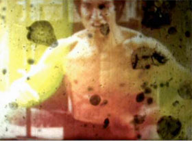

No Signal Detected

Péter Lichter – Hungary 2013 – HD – 3 min.
R: Péter Lichter – V: Light Cone
Rhytmical combat of digital and chemical decay. Stan Brakhage and Paul Sharits meet Bruce Lee.
Tuesday 14/10 10:30 p.m. Werkstattkino
Péter Lichter, born in 1984, studied film history and film theory at the ELTE University, Budapest. He makes short, found-footage, abstract experimentals and lyrical documentaries since 2002.
Films (selection): Light-Sleep 2009 – Cassette 2011 – Look Inside the Ghost Machine 2012 – No Signal Detected 2013 – Rimbaud 2014